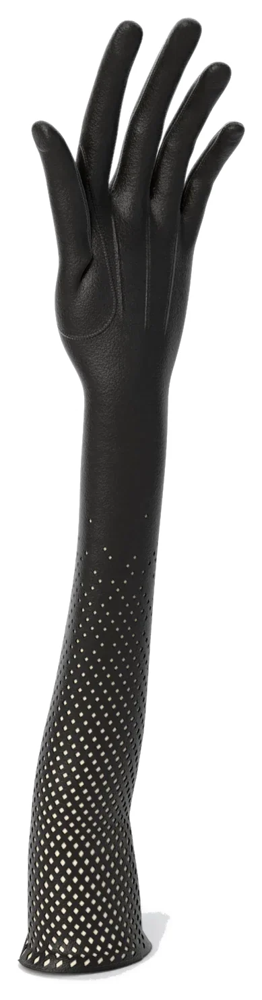
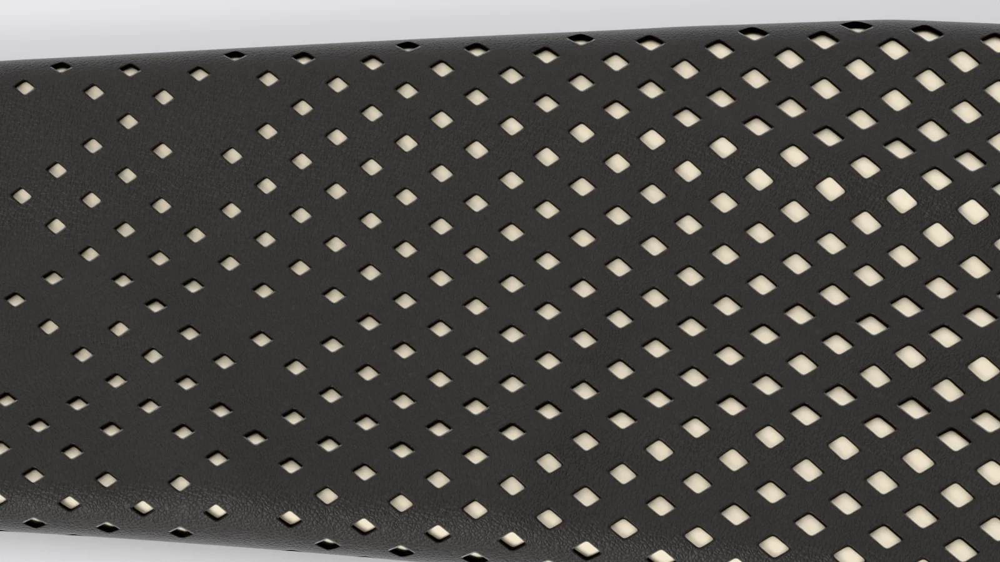
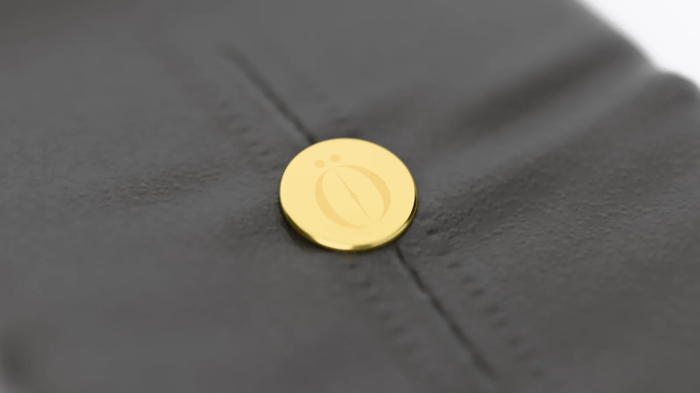
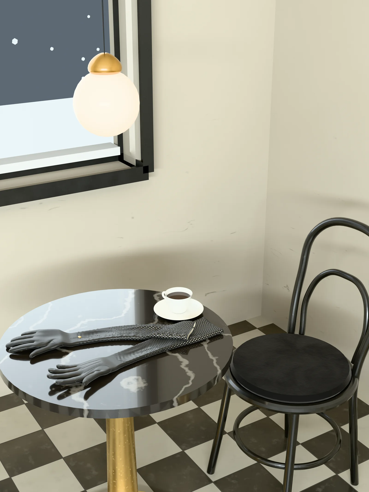

STAND-IN · img/ritornelo/front/master.* (departments/apparel/new-pieces-2026-11/build/opera-gloves/site/opera_gloves_front_16k.png; 16K, 15360 × 8640)
STAND-IN · img/ritornelo/front/master.* (departments/apparel/new-pieces-2026-11/build/opera-gloves/site/opera_gloves_front_16k.png; 16K, 15360 × 8640)
STAND-IN · img/ritornelo/three-quarter/master.* (three-quarter view, 8K; 8K, 7680 × 4320)
STAND-IN · img/ritornelo/detail-net/master.* (the net opening up the arm, 8K close-up; 8K, 7680 × 4320)
Chapter I · Accessories
Ritornelo
Opera gloves
Black lambskin past the elbow, cut with the Veil Coat's net: closed at the wrist and opening as it climbs the arm, cream silk inside. A brass snap with the Ö.
- LEATHER
- BLACK LAMBSKIN
- LINING
- CREAM SILK
- LENGTH
- ABOVE THE ELBOW
- SNAP
- BRASS, THE Ö ENGRAVED
- SIZE
- S · M · L
Price on request
ReserveMade to order. Delivery date confirmed by email.
Delivered in the house box.
Details
- Made to order
- Made to order. We email your delivery date once production is confirmed. Cancel for a full refund any time before production starts.
- Returns
- Exchanges within 14 days of delivery, unused and with tags. Returns
- Care
- Wipe with a soft dry cloth. Keep from rain and heat; if it gets wet, let it dry slowly away from a radiator. Store in its dust bag, stuffed with tissue, out of the light. Leather cleaning by a specialist only. Care
- Size
- The measurements

STAND-IN · img/ritornelo/world/master.* (C3: the last frame, the world plate (the café); 8K, 5760 × 7680)Where it is going · C3
The café
The chair pulled back, the cup still warm.
On the screen in the film, the picture is tomorrow: each piece in the place it is going, with one place kept for someone.
The maker’s notes
Ritornelo, the opera gloves
- Each begins as black lambskin, cut round the hand and arm with one long seam down the little finger’s side.
- It runs 53 cm from fingertip to top edge: 20 cm of hand, 33 cm of arm.
- The leather is solid to 5 cm above the wrist, then the coat’s own net opens, fully open for the last 7 cm.
- Three points are raised on the back of the hand: 60, 66 and 59 mm.
- It closes at the inside of the wrist: a 36 mm slit, a 10 mm brass snap, the mark engraved 7 mm tall.
Inside it: the coat’s cream silk, from the wrist to the top edge.
Read the poem